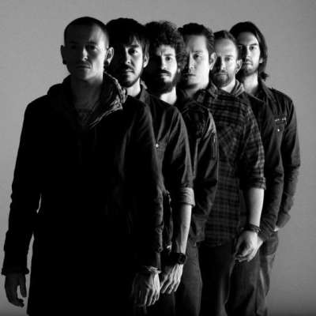

Текущий:
Майк Шинода — МС, вокал, клавишные, ритм-гитара, акустическая гитара, автор песен (1996—н.в.)
Брэд Дэлсон — соло-гитара, клавишные, перкуссия, акустическая гитара, бэк-вокал (1996—н.в.), бас-гитара (2000)
Дэвид Фаррелл — бас-гитара, клавишные, бэк-вокал (1996—1998, 2000—н.в.)
Роб Бурдон — ударные (1996—н.в.)
Джо Хан — диджей, бэк-вокал (1996—н.в.)
Бывшие участники:
Марк Уэйкфилд — вокал, автор песен (1996—1998)
Честер Беннингтон — вокал, иногда ритм-гитара, бэк-вокал, автор песен (1999—2017, умер в 2017[72])
Кайл Кристнер — бас-гитара (1998—1999)
Сессионные/концертные участники:
Скотт Козиол — бас-гитара (1999—2000)
Иэн Хорнбек — бас-гитара (2000)
Бенджамин Чендлер — соло-гитара (2014, 2015)
Уоррен Уиллис — диджей, клавишные (2015)
Назад